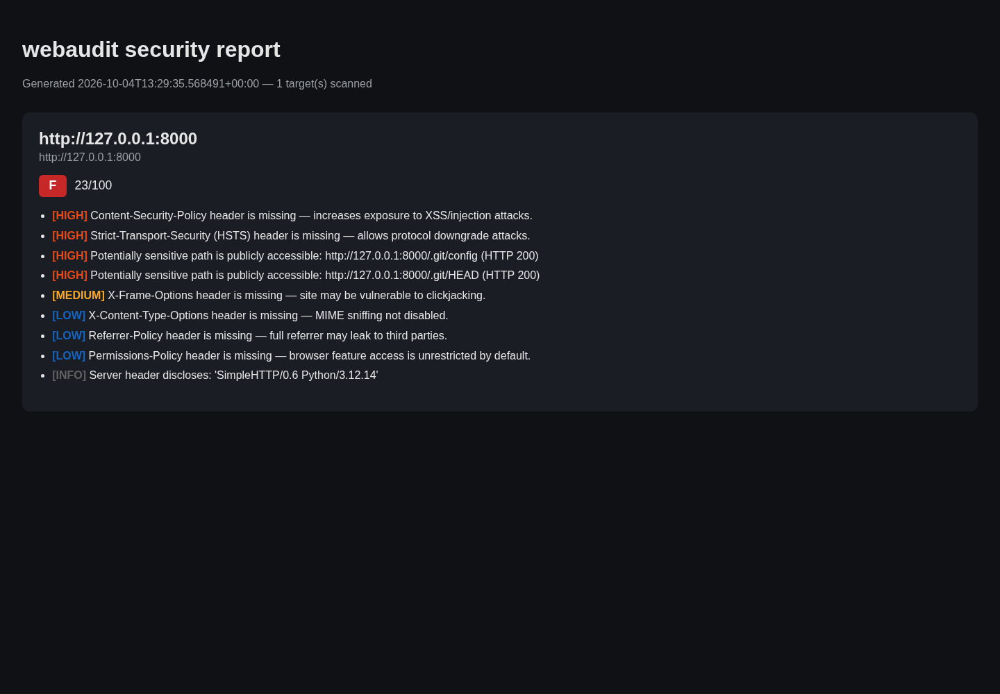

Development · Project documentation
Webaudit Security Toolkit
A Python toolkit combining web configuration audits with local malware and anomaly hunting, with scored findings and text, JSON, or HTML reports.

Purpose and outcome
Provides repeatable security observations with readable findings and portable report formats.
System architecture
The webaudit.py CLI coordinates separate header, TLS, cookie, CORS, and disclosure modules. Scoring and report modules assemble the output. The companion localhunt.py tool checks local processes, persistence, and host configuration.
Implemented capabilities
- Security headers, TLS, cookie flags, and CORS checks
- Information-disclosure checks for banners and exposed paths
- Weighted risk scoring and report exports
- Local process, persistence, and hosts-file checks; optional signature scanning
Typical workflow
- Select a web application you own or are authorised to assess.
- Collect configuration observations through ordinary HTTP requests and TLS inspection.
- Review scored findings and export a report.
- Use the separate local-hunting tool for host observations; review findings before remediation.
Evidence and validation
An HTML report was generated by the repository CLI against the temporary localhost portfolio server and rendered in a browser. Local malware hunting, deep scanning, quarantine, and production audits were not run.
Limitations and operating context
Configuration checks do not establish that an application is free of vulnerabilities. Optional YARA, ClamAV, and VirusTotal integrations require their own dependencies or configuration.
Prepared from the project repository and the captured application screen on 4 October 2026. Descriptions document the system’s capabilities; the evidence above states what was exercised for this portfolio update.
← Back to project case studies